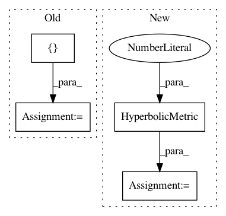

1a3b0e387f3f1edb668833602873dea492822c2a,geomstats/geometry/poincare_polydisk.py,PoincarePolydiskMetric,__init__,#PoincarePolydiskMetric#Any#,43
Before Change
def __init__(self, n_disks):
self.n_disks = n_disks
metric = HyperbolicMetric(dimension=2)
list_metrics = [metric, ] * n_disks
super(PoincarePolydiskMetric, self).__init__(
metrics=list_metrics)
After Change
list_metrics = []
for i_disk in range(n_disks):
scale_i = (n_disks - i_disk) ** 0.5
metric_i = HyperbolicMetric(dimension=2, scale=scale_i)
list_metrics.append(metric_i)
super(PoincarePolydiskMetric, self).__init__(
metrics=list_metrics)
In pattern: SUPERPATTERN
Frequency: 3
Non-data size: 4
Instances
Project Name: geomstats/geomstats
Commit Name: 1a3b0e387f3f1edb668833602873dea492822c2a
Time: 2020-01-16
Author: yann.cabanes@u-bordeaux.fr
File Name: geomstats/geometry/poincare_polydisk.py
Class Name: PoincarePolydiskMetric
Method Name: __init__
Project Name: geomstats/geomstats
Commit Name: f968d7bec6552b6986731a4dfbb0a524d01a29a2
Time: 2020-01-16
Author: thomas.l.p.gerald@gmail.com
File Name: examples/plot_kmean_poincare_disk.py
Class Name:
Method Name: main
Project Name: geomstats/geomstats
Commit Name: b8c02dadce36952bb6ad305df5b3d57fc71dc52b
Time: 2020-01-16
Author: yann.cabanes@u-bordeaux.fr
File Name: geomstats/geometry/poincare_polydisk.py
Class Name: PoincarePolydiskMetric
Method Name: __init__